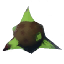
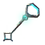

Den Eldste: plassering, påkalling og tips
Den Eldste: plassering, påkalling og tips
Den Eldste er et gigantisk levende tre og den andre bossen. Han hersker over Svartskogen og straffer spillere som møter ham i åpent lende. Med ildpiler og en søyle å gjemme seg bak er han helt overkommelig.
| Biom | Svartskog |
|---|---|
| Helse | 2 500 |
| Offergave |  3 × Eldgammelt frø |
| Svak mot | Brann |
| Motstandsdyktig mot | – |
| Immun mot | Gift, Ånd |
| Slipper |  Sumpnøkkel |
| De Fortaptes Kraft | 60 % mer skade ved hogging og hakking og 30 % raskere helseregenerering. |
Vis altrene til Den Eldste på kartet
Slik finner du Den Eldste
Alteret til Den Eldste står i Svartskogen: en steinplattform med fire høye søyler rundt en ildskål. Røde runesteiner i Gravkamrene og i enkelte forfalne steintårn markerer nærmeste alter på kartet ditt.
For å påkalle ham brenner du 3 eldgamle frø i ildskålen. Frøene slippes av grådvergskjemper og grådvergssjamaner, og alltid av ødelagte grådvergsbol, de lilla, glødende reirene som grådvergene kommer ut av.
Forberedelser
- Bronserustning er ideelt. Trollskinnsrustning er et godt og mye billigere alternativ.
- Ta med en finvedsbue og minst 100 ildpiler. Den Eldste er svak mot ild, og brannskaden fortsetter å tikke.
- Ta med en bronsebuklare eller et bundet skjold, og en øks til røttene.
- Brygg noen svake helbredelsesmjøder og spis de tre beste matrettene dine, for eksempel hjortestuing, gulrotsuppe og dronninghonning.
- Rydd grådvergsbol rundt alteret, hogg ned trær i nærheten og bygg et lite ly med en portal et lite stykke unna.
Angrep
- Rankeskudd: han strekker ut armene og skyter en skur av ranker over lang avstand. Still deg bak en av de fire søylene. De kan ikke ødelegges.
- Tramp: på kloss hold tramper han i bakken og gjør stor skade. Hold avstand eller rull unna.
- Røtter: han reiser et felt av røtter rundt deg som pisker alle i nærheten. Gå ut av området. Røttene forsvinner etter en stund, eller du kan hogge dem ned med øks.
Tips og triks
- Spill rundt søylene: gå ut, skyt to eller tre ildpiler, gå tilbake før rankene kommer. Denne enkle rytmen vinner kampen.
- Ikke gå i nærkamp med mindre du må. Trampet slår mye hardere enn noe annet på dette stadiet i spillet.
- Fallende trær er en reell fare. Den Eldste velter dem med rankene sine, og en fallende stamme kan drepe deg på stedet. Rydder du arenaen på forhånd, slipper du den risikoen.
- Påkall ham om morgenen. Kampen kan ta flere minutter, og om natta blir det trangt i skogen.
- Et leirbål eller bål nær arenaen holder deg Uthvilt, og ilden skader ham hvis han går gjennom det.
Belønning
Den Eldste slipper sumpnøkkelen og trofeet sitt. Nøkkelen åpner de Sunkne Kryptene i Sumpen, den eneste gode kilden til jern.
Når Den Eldste er beseiret, får Haldor ymirskjøtt og tordensteiner i sortimentet, og Sumpheksa selger flere ingredienser.
Kraften hans gjør vedhogst og gruvedrift betydelig raskere. Den er perfekt til store byggeprosjekter og gruveturer.